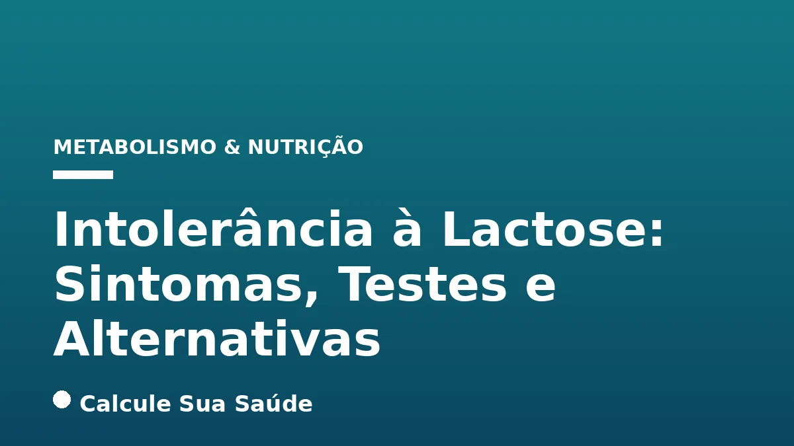

Aviso médico importante
Este conteúdo é educativo e informativo e não substitui a consulta, o diagnóstico ou o tratamento de um profissional de saúde. Em caso de sintomas, procure orientação médica.
Índice do Artigo
- 1. O Que É Intolerância à Lactose?
- 2. Tipos de Intolerância à Lactose: Uma Classificação Essencial
- 3. Causas e Fatores de Risco da Intolerância à Lactose
- 4. Sintomas da Intolerância à Lactose: Como Reconhecer os Sinais
- 5. Diagnóstico: Como Confirmar a Intolerância à Lactose
- 6. Manejo Dietético: A Base do Tratamento da Intolerância à Lactose
- 7. Suplementação da Enzima Lactase: Um Aliado na Digestão
- 8. Alternativas Lácteas e Fontes de Cálcio Não Lácteas
- 9. Impacto Nutricional e Prevenção de Deficiências
- 10. Diferença Crucial: Intolerância à Lactose vs. Alergia à Proteína do Leite
- 11. Mitos e Verdades Comuns sobre a Lactose
- 12. Mitos e Verdades Comuns sobre a Lactose (continuação)
- 13. Mitos e Verdades Comuns sobre a Lactose (continuação)
- 14. Mitos e Verdades Comuns sobre a Lactose (continuação)
- 15. Mitos e Verdades Comuns sobre a Lactose (continuação)
- 16. Epidemiologia da Intolerância à Lactose no Brasil e no Mundo
- 17. Quando Procurar Ajuda Médica
- 18. Conclusão: Gerenciando a Intolerância à Lactose com Conhecimento
- 19. Perguntas frequentes
A intolerância à lactose é uma condição digestiva comum que afeta uma parcela significativa da população global, caracterizada pela dificuldade em digerir a lactose, o açúcar natural presente no leite e seus derivados. Essa incapacidade resulta da deficiência ou ausência da enzima lactase, produzida no intestino delgado, que é fundamental para quebrar a lactose em açúcares mais simples – glicose e galactose – que podem ser absorvidos pelo organismo. Quando a lactase é insuficiente, a lactose não digerida segue para o intestino grosso, onde é fermentada por bactérias, desencadeando uma série de sintomas gastrointestinais incômodos.
Compreender a intolerância à lactose vai além de simplesmente evitar laticínios. Envolve reconhecer os diferentes tipos da condição, identificar seus sintomas, buscar um diagnóstico preciso e, crucialmente, adotar estratégias eficazes de manejo que permitam uma alimentação equilibrada e uma boa qualidade de vida. Este artigo visa desmistificar a intolerância à lactose, fornecendo informações baseadas em evidências científicas sobre suas causas, diagnóstico, tratamentos e as melhores alternativas para quem convive com essa condição.
Nosso objetivo é capacitar você com o conhecimento necessário para gerenciar a intolerância à lactose de forma consciente e saudável, garantindo a ingestão adequada de nutrientes essenciais e evitando restrições desnecessárias que possam comprometer a saúde a longo prazo. Abordaremos desde os testes diagnósticos mais modernos até as opções dietéticas e suplementares que podem fazer a diferença no dia a dia.
Em resumo
- A intolerância à lactose é a incapacidade de digerir a lactose devido à deficiência da enzima lactase.
- Existem tipos primário (genético e mais comum), secundário (temporário, por danos intestinais) e congênito (raro, desde o nascimento).
- Sintomas incluem dor abdominal, inchaço, gases e diarreia, surgindo após 30 minutos a 2 horas da ingestão de lactose.
- O diagnóstico é feito por testes como o respiratório de hidrogênio expirado, teste de tolerância à lactose e teste genético.
- O tratamento foca na limitação do consumo de lactose, uso de suplementos de lactase e escolha de produtos sem lactose ou alternativas.
- É crucial diferenciar intolerância à lactose de alergia à proteína do leite, que são condições distintas com abordagens diferentes.
1. O Que É Intolerância à Lactose?
A intolerância à lactose é uma condição digestiva que se manifesta quando o organismo não consegue digerir adequadamente a lactose, um dissacarídeo composto por glicose e galactose, presente no leite e em seus derivados. Essa dificuldade ocorre devido à produção insuficiente ou ausente da enzima lactase, que é sintetizada nas células da borda em escova do intestino delgado. A lactase é essencial para hidrolisar a lactose em seus monossacarídeos constituintes, permitindo sua absorção pela corrente sanguínea. Sem a quantidade adequada de lactase, a lactose não digerida permanece no lúmen intestinal.
Quando a lactose não é quebrada no intestino delgado, ela avança para o intestino grosso (cólon). Lá, a microbiota intestinal, composta por bilhões de bactérias, fermenta essa lactose não digerida. O processo de fermentação bacteriana gera subprodutos como gases (hidrogênio, metano e dióxido de carbono) e ácidos graxos de cadeia curta, além de atrair água para o intestino por osmose. Esses eventos fisiológicos são os responsáveis pelos sintomas característicos da intolerância à lactose, que variam em intensidade dependendo da quantidade de lactose ingerida e da capacidade residual de produção de lactase de cada indivíduo.
2. Tipos de Intolerância à Lactose: Uma Classificação Essencial
A intolerância à lactose não é uma condição única, mas sim um espectro que pode ser classificado em diferentes tipos, cada um com suas causas e características específicas. Compreender essa distinção é fundamental para um diagnóstico preciso e um manejo adequado.
Intolerância Primária (Hipolactasia do Tipo Adulto)
Esta é a forma mais comum de intolerância à lactose, afetando a maioria da população mundial. É geneticamente determinada e caracteriza-se pela diminuição natural e progressiva da produção de lactase ao longo da vida, geralmente a partir da infância tardia, adolescência ou idade adulta. Indivíduos com intolerância primária nascem com a capacidade de produzir lactase, mas essa produção declina com o tempo. É uma adaptação genética comum em populações onde o consumo de leite e derivados não era historicamente prevalente na idade adulta, como em grande parte da Ásia, África e América do Sul, incluindo o Brasil.
Intolerância Secundária
A intolerância secundária ocorre como resultado de danos temporários ou permanentes ao intestino delgado, que afetam a produção de lactase. Esses danos podem ser causados por diversas condições gastrointestinais, como doença celíaca, doença de Crohn, gastroenterite viral ou bacteriana, giardíase, supercrescimento bacteriano do intestino delgado (SIBO), ou mesmo por tratamentos como radioterapia e quimioterapia. Nesses casos, a deficiência de lactase é reversível, e a capacidade de digerir a lactose pode ser restaurada uma vez que a condição subjacente seja tratada e o intestino se recupere. Para mais informações sobre a saúde intestinal, confira nosso artigo sobre Fibras Alimentares: Tipos, Quantidade e Impacto na Saúde.
Intolerância Congênita
Extremamente rara, a intolerância congênita é uma condição genética autossômica recessiva em que o bebê nasce com a incapacidade total de produzir lactase. Os sintomas aparecem logo após as primeiras mamadas, seja de leite materno ou fórmula láctea convencional. É uma condição grave que exige a substituição imediata do leite por fórmulas sem lactose para garantir o desenvolvimento e a nutrição do recém-nascido.
Intolerância do Desenvolvimento
Este tipo afeta bebês prematuros. O intestino delgado desenvolve as células produtoras de lactase mais intensamente no final do terceiro trimestre de gestação. Assim, bebês nascidos prematuramente podem ter níveis reduzidos de lactase, resultando em intolerância temporária. Geralmente, essa condição melhora à medida que o sistema digestivo do bebê amadurece.
3. Causas e Fatores de Risco da Intolerância à Lactose
A principal causa da intolerância à lactose é a deficiência da enzima lactase no intestino delgado. No entanto, diversos fatores podem influenciar essa deficiência, tornando algumas pessoas mais suscetíveis à condição.
Fatores Genéticos e Étnicos
A genética desempenha um papel crucial na intolerância primária. A persistência da lactase, ou seja, a capacidade de continuar produzindo a enzima na idade adulta, é uma característica genética que se desenvolveu em algumas populações, principalmente de ascendência do Norte Europeu. Por outro lado, a hipolactasia do tipo adulto é mais comum em populações de ascendência africana, asiática, árabe, grega, chinesa, coreana e canadense. Estima-se que cerca de 70% da população mundial apresente hipolactasia do tipo adulto. No Brasil, um estudo indicou que aproximadamente 51% da população adulta tem predisposição genética para desenvolver intolerância à lactose, e cerca de 40% relata desconforto após consumir laticínios.
Envelhecimento
É um fator de risco significativo para a intolerância primária. A produção de lactase tende a diminuir naturalmente com a idade na maioria das pessoas, mesmo naquelas que toleravam bem a lactose na juventude. Este declínio gradual explica por que muitos adultos começam a experimentar sintomas de intolerância à lactose à medida que envelhecem.
Condições Médicas e Doenças Gastrointestinais
A intolerância secundária é diretamente ligada a condições que danificam o revestimento do intestino delgado, onde a lactase é produzida. Doenças como doença celíaca, doença de Crohn, gastroenterites virais ou bacterianas, giardíase e supercrescimento bacteriano do intestino delgado (SIBO) podem comprometer a integridade da mucosa intestinal e, consequentemente, a produção de lactase. A recuperação da condição subjacente geralmente leva à melhora ou resolução da intolerância à lactose secundária.
Prematuridade
Bebês prematuros podem apresentar intolerância do desenvolvimento devido ao sistema digestivo imaturo. A produção de lactase se intensifica no final da gestação, e o nascimento antes do termo pode resultar em níveis insuficientes da enzima.
Medicamentos e Tratamentos
Alguns tratamentos médicos, como a radioterapia e a quimioterapia, podem causar danos temporários ao intestino delgado, levando a uma deficiência secundária de lactase. Em muitos casos, a função da lactase pode ser restaurada após a conclusão do tratamento e a recuperação do tecido intestinal.
4. Sintomas da Intolerância à Lactose: Como Reconhecer os Sinais
Os sintomas da intolerância à lactose são predominantemente gastrointestinais e surgem quando a lactose não digerida chega ao intestino grosso, sendo fermentada por bactérias. A intensidade e o tipo dos sintomas podem variar amplamente entre os indivíduos, dependendo da quantidade de lactose ingerida e do grau de deficiência de lactase.
Sintomas Gastrointestinais Comuns
- Dor e Cólicas Abdominais: Resultam da distensão do intestino devido à produção de gases e ao acúmulo de líquidos.
- Distensão Abdominal (Inchaço): Causada pela formação excessiva de gases no cólon.
- Gases (Flatulência): A fermentação bacteriana da lactose é uma fonte significativa de gases.
- Diarreia: A lactose não absorvida atrai água para o intestino por osmose, resultando em fezes mais líquidas e, por vezes, explosivas.
- Náuseas e Vômitos: Embora menos comuns que os outros sintomas, podem ocorrer em casos de maior sensibilidade ou ingestão de grandes quantidades de lactose.
Os sintomas geralmente se manifestam entre 30 minutos e 2 horas após o consumo de alimentos ou bebidas que contêm lactose. É importante notar que a tolerância individual varia; algumas pessoas podem consumir pequenas quantidades de lactose sem sintomas, enquanto outras reagem a traços mínimos.
Sintomas Menos Comuns e em Crianças
Além dos sintomas gastrointestinais clássicos, alguns indivíduos podem relatar manifestações menos típicas, como azia, dor de cabeça, fadiga, dores musculares/articulares, vertigens e dificuldade de concentração. Em crianças, especialmente bebês, a intolerância à lactose pode se manifestar com baixo ganho de peso e atrasos no desenvolvimento, além dos sintomas digestivos. É crucial monitorar esses sinais e buscar orientação pediátrica.
A tabela a seguir resume os principais sintomas e sua frequência:
| Sintoma | Frequência | Causa Fisiológica |
|---|---|---|
| Dor e Cólicas Abdominais | Muito comum | Distensão intestinal por gases e líquidos |
| Distensão Abdominal (Inchaço) | Muito comum | Acúmulo de gases no cólon |
| Gases (Flatulência) | Muito comum | Fermentação bacteriana da lactose |
| Diarreia (líquida/explosiva) | Comum | Efeito osmótico da lactose não absorvida |
| Náuseas | Ocasional | Irritação gastrointestinal |
| Vômitos | Raro | Irritação gastrointestinal severa |
| Azia, Dor de Cabeça, Fadiga | Menos comum | Reações sistêmicas ou associadas |
5. Diagnóstico: Como Confirmar a Intolerância à Lactose
O diagnóstico da intolerância à lactose é fundamental para diferenciar a condição de outras desordens gastrointestinais e para iniciar um plano de manejo adequado. O processo envolve a avaliação clínica dos sintomas e a realização de exames específicos.
Teste Respiratório de Hidrogênio Expirado
Considerado o método de escolha e o exame mais sensível e específico para detectar a má absorção e intolerância à lactose. O paciente ingere uma solução padronizada de lactose. Se a lactose não for digerida, ela será fermentada por bactérias no cólon, produzindo hidrogênio. Esse hidrogênio é absorvido pela corrente sanguínea, transportado para os pulmões e exalado. Os níveis de hidrogênio no ar expirado são medidos em intervalos regulares (geralmente a cada 15-30 minutos por 2-3 horas). Um aumento de mais de 20 partes por milhão em 90 minutos em relação ao valor basal indica intolerância à lactose.
Teste de Tolerância à Lactose
Este teste avalia a capacidade do corpo de digerir a lactose medindo os níveis de glicemia (açúcar no sangue). Após um período de jejum, o paciente ingere uma dose padronizada de lactose. Amostras de sangue são coletadas em diferentes tempos (geralmente 0, 30, 60 e 120 minutos) para medir a glicose. Em indivíduos com lactase funcional, a lactose é quebrada em glicose e galactose, e a glicose é absorvida, resultando em um aumento significativo da glicemia. Em intolerantes, a glicemia aumenta menos do que o esperado, indicando que a lactose não foi absorvida.
Teste Genético
O teste genético avalia a presença de mutações genéticas associadas à persistência da produção de lactase ou à deficiência congênita. Pode ser realizado a partir de uma amostra de sangue ou saliva. Este teste é útil para identificar a predisposição genética à intolerância primária, mas não necessariamente confirma a condição em si, pois a expressão da deficiência pode variar.
Teste Rápido de Lactase (Biópsia)
Este é um método invasivo que envolve a coleta de uma pequena amostra de tecido do duodeno (primeira parte do intestino delgado) por biópsia, geralmente durante uma endoscopia. A atividade da enzima lactase é então avaliada na amostra de tecido. Na intolerância à lactose, a atividade da enzima estará ausente ou significativamente reduzida. Este teste é menos comum para o diagnóstico rotineiro de intolerância à lactose, sendo mais utilizado em casos específicos ou para pesquisa.
Teste Clínico (Dieta de Exclusão)
Consiste na retirada completa de lactose da dieta por um período (geralmente 2 a 4 semanas) e posterior reintrodução gradual para observar o desaparecimento e reaparecimento dos sintomas. É um método prático e de baixo custo, frequentemente utilizado como primeira abordagem, mas deve ser supervisionado por um profissional de saúde para garantir a precisão e evitar deficiências nutricionais. Este teste ajuda o paciente a identificar seu próprio limite de tolerância.
6. Manejo Dietético: A Base do Tratamento da Intolerância à Lactose
Não existe uma 'cura' para a intolerância à lactose, mas a condição pode ser efetivamente gerenciada através de ajustes dietéticos. O objetivo principal é controlar os sintomas, permitindo que o indivíduo mantenha uma dieta nutritiva e variada.
Limitação do Consumo de Lactose
A abordagem central é reduzir a ingestão de alimentos e bebidas que contêm lactose. No entanto, isso não significa necessariamente uma eliminação total. A maioria das pessoas com intolerância à lactose consegue consumir pequenas quantidades de lactose sem apresentar sintomas significativos. Muitos toleram até 12 gramas de lactose por refeição, o equivalente a aproximadamente 240 ml (uma xícara) de leite. É crucial que cada indivíduo identifique seu próprio limite de tolerância através da observação dos sintomas após a ingestão de diferentes quantidades de lactose.
Produtos Lácteos com Baixo Teor ou Sem Lactose
O mercado oferece uma vasta gama de produtos lácteos que já contêm a enzima lactase em sua formulação ou que tiveram a lactose removida durante o processo de fabricação. Leites, iogurtes, queijos e até sorvetes sem lactose são excelentes alternativas que permitem o consumo de laticínios sem os desconfortos gastrointestinais. Esses produtos mantêm o perfil nutricional do leite comum, sendo boas fontes de cálcio e vitamina D.
Consumo de Laticínios com Baixo Teor de Lactose Natural
Alguns produtos lácteos, devido ao seu processo de fermentação ou envelhecimento, naturalmente contêm menos lactose e podem ser melhor tolerados. Iogurtes, por exemplo, contêm bactérias que ajudam a quebrar a lactose, reduzindo seu teor em 20% a 30% em comparação com o leite. Queijos envelhecidos, como parmesão, cheddar e suíço, têm quantidades mínimas de lactose e são frequentemente bem tolerados. A manteiga, por ser composta principalmente de gordura, também contém pouca lactose.
Estratégias de Consumo
Ingerir produtos lácteos junto com outras refeições pode ajudar a retardar a digestão e a passagem da lactose pelo sistema digestivo, o que pode reduzir a intensidade dos sintomas. Além disso, distribuir a ingestão de lactose ao longo do dia em pequenas porções, em vez de uma grande quantidade de uma só vez, também pode melhorar a tolerância.
7. Suplementação da Enzima Lactase: Um Aliado na Digestão
Para muitos indivíduos com intolerância à lactose, a suplementação oral da enzima lactase representa uma estratégia eficaz para desfrutar de alimentos lácteos sem os desconfortos. Essa abordagem é baseada na reposição da enzima que o corpo não produz em quantidade suficiente.
Mecanismo de Ação
Os suplementos de lactase contêm a enzima idêntica àquela produzida naturalmente pelo intestino delgado. Quando ingeridos antes ou junto com alimentos que contêm lactose, esses suplementos fornecem a lactase necessária para quebrar o açúcar do leite no trato gastrointestinal. A enzima atua no estômago e no intestino delgado, hidrolisando a lactose em glicose e galactose antes que ela atinja o intestino grosso, prevenindo assim a fermentação bacteriana e o surgimento dos sintomas.
Eficácia e Segurança
Pesquisas clínicas demonstram que a suplementação oral com lactase é segura e eficaz na redução de sintomas como dor abdominal, inchaço, gases e diarreia em pessoas com intolerância à lactose. A enzima suplementar é inativada pelas mudanças de pH ao longo do trato digestivo e não é absorvida pela corrente sanguínea; o excesso é simplesmente eliminado nas fezes. Isso significa que não há risco de superdosagem ou efeitos colaterais sistêmicos. A dosagem ideal pode variar entre os indivíduos e a quantidade de lactose a ser consumida, sendo recomendável seguir as instruções do fabricante ou a orientação de um profissional de saúde.
Quando e Como Usar
Os suplementos de lactase estão disponíveis em diversas formas, como comprimidos mastigáveis, cápsulas ou gotas. Geralmente, são tomados alguns minutos antes da ingestão de alimentos ou bebidas contendo lactose. Para refeições mais longas ou que contenham grandes quantidades de lactose, pode ser necessário tomar doses adicionais durante a refeição. É importante lembrar que a suplementação é uma ferramenta de manejo, não uma cura, e deve ser utilizada conforme a necessidade e a tolerância individual.
8. Alternativas Lácteas e Fontes de Cálcio Não Lácteas
Para quem precisa limitar o consumo de laticínios, seja por intolerância à lactose ou por outras razões, é fundamental garantir a ingestão adequada de nutrientes essenciais, especialmente cálcio e vitamina D, que são abundantes no leite e seus derivados. Felizmente, existem diversas alternativas nutritivas.
Bebidas Vegetais Fortificadas
Uma excelente opção são as bebidas vegetais, que podem substituir o leite de vaca em muitas preparações. As mais comuns incluem:
- Leite de Soja: Rico em proteínas e frequentemente fortificado com cálcio e vitamina D.
- Leite de Amêndoa: Geralmente mais baixo em calorias e também fortificado.
- Leite de Arroz: Uma opção para quem tem alergias a soja ou nozes, também disponível fortificado.
- Leite de Aveia: Possui uma textura cremosa e é uma boa fonte de fibras, além de ser fortificado.
Ao escolher bebidas vegetais, é importante verificar o rótulo para garantir que sejam fortificadas com cálcio e vitamina D para atender às necessidades nutricionais. Para aprofundar-se na importância do cálcio, consulte nosso artigo sobre Cálcio: Necessidades, Fontes e Absorção Essencial.
Alimentos Ricos em Cálcio Não Lácteos
Diversos alimentos de origem não láctea são excelentes fontes de cálcio e podem ser incorporados à dieta para compensar a restrição de laticínios:
- Vegetais de Folhas Verdes Escuras: Espinafre, couve, brócolis e agrião são ricos em cálcio biodisponível.
- Peixes: Salmão, sardinha (com ossos) e anchovas são ótimas fontes de cálcio e vitamina D.
- Leguminosas: Feijão branco, grão de bico e lentilha contêm quantidades significativas de cálcio.
- Frutas: Laranja, figo e kiwi também contribuem para a ingestão de cálcio.
- Sementes e Oleaginosas: Gergelim, chia, amêndoas e castanha-do-pará são boas fontes.
- Tofu Fortificado: O tofu processado com sulfato de cálcio é uma excelente fonte.
A vitamina D é crucial para a absorção do cálcio. Além da exposição solar, fontes alimentares incluem peixes gordurosos (salmão, atum) e alimentos fortificados.
A tabela a seguir apresenta algumas fontes de cálcio não lácteas e suas quantidades aproximadas:
| Alimento | Porção | Cálcio (mg) |
|---|---|---|
| Sardinha enlatada (com ossos) | 100g | 380 |
| Tofu (fortificado) | 100g | 350 |
| Couve cozida | 1 xícara | 260 |
| Leite de soja (fortificado) | 240ml | 300 |
| Brócolis cozido | 1 xícara | 60 |
| Amêndoas | 30g (23 unidades) | 75 |
| Laranja | 1 unidade média | 60 |
9. Impacto Nutricional e Prevenção de Deficiências
A restrição dietética de laticínios, se não for bem planejada, pode levar a deficiências nutricionais, especialmente de cálcio e vitamina D, que são cruciais para a saúde óssea e outras funções corporais. É vital garantir que a dieta de um indivíduo com intolerância à lactose seja nutricionalmente completa.
Cálcio e Saúde Óssea
O cálcio é o mineral mais abundante no corpo e desempenha um papel fundamental na formação e manutenção de ossos e dentes, coagulação sanguínea, função muscular e transmissão nervosa. A ingestão inadequada de cálcio a longo prazo pode aumentar o risco de osteopenia e osteoporose, condições que fragilizam os ossos e aumentam a suscetibilidade a fraturas. Por isso, ao remover ou reduzir laticínios, é imperativo substituí-los por outras fontes ricas em cálcio, conforme discutido na seção anterior, ou considerar a suplementação sob orientação médica.
Vitamina D
A vitamina D é essencial para a absorção do cálcio no intestino e para a mineralização óssea. Além disso, desempenha um papel importante na função imunológica e em outros processos metabólicos. Embora a principal fonte de vitamina D seja a exposição solar, muitos laticínios são fortificados com essa vitamina. Indivíduos que evitam laticínios devem buscar outras fontes, como peixes gordurosos (salmão, atum, cavala), gema de ovo e alimentos fortificados (como alguns cereais e sucos), ou considerar a suplementação, especialmente em regiões com menor exposição solar ou para grupos de risco.
Outros Nutrientes
Além de cálcio e vitamina D, o leite e seus derivados também são fontes de proteínas de alta qualidade, fósforo, potássio e algumas vitaminas do complexo B. Ao planejar uma dieta sem lactose, é importante garantir a ingestão adequada desses nutrientes através de uma variedade de alimentos, como carnes magras, ovos, leguminosas, grãos integrais, frutas e vegetais. Para uma visão mais ampla sobre a importância de outros nutrientes, você pode consultar nosso artigo sobre Ferro: Alimentos, Absorção e Suplementação Essencial.
A Importância da Orientação Profissional
Para evitar deficiências nutricionais e garantir uma dieta equilibrada, é altamente recomendável que pessoas com intolerância à lactose busquem a orientação de um nutricionista. Este profissional pode ajudar a elaborar um plano alimentar personalizado, identificar fontes alternativas de nutrientes e, se necessário, indicar a suplementação adequada, garantindo que todas as necessidades nutricionais sejam atendidas.
10. Diferença Crucial: Intolerância à Lactose vs. Alergia à Proteína do Leite
Um dos mitos mais persistentes e perigosos é a confusão entre intolerância à lactose e alergia à proteína do leite de vaca (APLV). Embora ambas as condições envolvam reações adversas ao leite, suas causas, mecanismos e gravidade são fundamentalmente diferentes.
Intolerância à Lactose
Como detalhado anteriormente, a intolerância à lactose é um problema digestivo. Ela ocorre devido à deficiência da enzima lactase, que impede a digestão do açúcar lactose. Os sintomas são predominantemente gastrointestinais (dor, inchaço, gases, diarreia) e geralmente não são ameaçadores à vida. A intensidade dos sintomas é dose-dependente, ou seja, pequenas quantidades de lactose podem ser toleradas por muitos indivíduos.
Alergia à Proteína do Leite de Vaca (APLV)
A APLV é uma reação do sistema imunológico às proteínas presentes no leite de vaca (como caseína, alfa-lactoalbumina e beta-lactoglobulina). O sistema imunológico identifica essas proteínas como invasores e desencadeia uma resposta alérgica. As reações podem ser imediatas (mediadas por IgE) ou tardias (não mediadas por IgE) e podem afetar diversos sistemas do corpo, não apenas o digestivo. Os sintomas podem incluir:
- Sintomas Cutâneos: Urticária, eczema, inchaço (angioedema).
- Sintomas Respiratórios: Chiado no peito, dificuldade para respirar, coriza, tosse.
- Sintomas Digestivos: Vômitos, diarreia (às vezes com sangue), cólicas severas.
- Sintomas Sistêmicos: Anafilaxia (uma reação alérgica grave e potencialmente fatal que requer atenção médica imediata).
Pessoas com APLV devem evitar completamente todas as formas de proteínas do leite, pois mesmo pequenas quantidades podem desencadear reações graves. A APLV é mais comum em bebês e crianças pequenas, embora possa persistir na idade adulta.
A tabela a seguir resume as principais diferenças:
| Característica | Intolerância à Lactose | Alergia à Proteína do Leite de Vaca (APLV) |
|---|---|---|
| Natureza da Reação | Problema digestivo (enzimático) | Reação imunológica (alérgica) |
| Causa | Deficiência da enzima lactase | Reação às proteínas do leite (caseína, lactoalbumina, etc.) |
| Sintomas | Gastrointestinais: inchaço, gases, diarreia, cólicas | Cutâneos, respiratórios, gastrointestinais, anafilaxia |
| Gravidade | Desconforto, geralmente não grave | Pode ser grave e potencialmente fatal (anafilaxia) |
| Quantidade Tolerada | Pequenas quantidades podem ser toleradas | Qualquer quantidade pode desencadear reação |
| Diagnóstico | Testes respiratórios, de tolerância, genéticos | Testes cutâneos, IgE específica, dieta de exclusão/reintrodução |
| Tratamento | Limitação de lactose, suplementos de lactase | Exclusão total de proteínas do leite |
11. Mitos e Verdades Comuns sobre a Lactose
A intolerância à lactose é cercada por muitos equívocos. Esclarecer esses mitos com base na ciência é crucial para um manejo adequado e para evitar restrições desnecessárias.
Mito: Todos os alimentos derivados do leite contêm lactose.
Verdade: Nem todos. Alguns queijos envelhecidos, como parmesão, cheddar e suíço, contêm quantidades muito baixas de lactose devido ao processo de fabricação e maturação, que quebra o açúcar. Iogurtes fermentados também têm teor reduzido de lactose, pois as bactérias presentes consomem parte dela. Além disso, existe uma vasta gama de produtos
12. Mitos e Verdades Comuns sobre a Lactose (continuação)
sem lactose13. Mitos e Verdades Comuns sobre a Lactose (continuação)
disponíveis no mercado, onde a enzima lactase é adicionada para pré-digerir a lactose.Mito: Iogurtes comuns são seguros para intolerantes à lactose.
Verdade: Embora o iogurte tenha uma redução de 20% a 30% no teor de lactose em comparação com o leite, para ser considerado adequado para a maioria das pessoas com intolerância, a redução ideal deve ser de no mínimo 70%. Muitos indivíduos ainda podem sentir sintomas com iogurtes comuns. É preferível optar por iogurtes especificamente rotulados como
14. Mitos e Verdades Comuns sobre a Lactose (continuação)
sem lactose15. Mitos e Verdades Comuns sobre a Lactose (continuação)
ou à base de vegetais.Mito: A lactose faz mal para todas as pessoas.
Verdade: A lactose só causa problemas para pessoas que não produzem lactase em quantidade suficiente. Indivíduos com produção normal da enzima digerem a lactose sem qualquer problema e podem se beneficiar dos nutrientes presentes nos laticínios. A restrição desnecessária de laticínios pode levar a deficiências nutricionais importantes, como as de cálcio e vitamina D, impactando a saúde óssea e geral.
Mito: Leites vegetais e leite sem lactose têm as mesmas propriedades.
Verdade: Leites vegetais (como os de coco, amêndoa, arroz, soja e aveia) são naturalmente isentos de lactose e são excelentes alternativas. No entanto, suas propriedades nutricionais são distintas das do leite de vaca. O leite sem lactose, por outro lado, é leite de vaca que teve a enzima lactase adicionada para quebrar a lactose, mantendo as mesmas propriedades nutricionais (proteínas, vitaminas, minerais) do leite comum. A escolha entre um e outro deve considerar as necessidades nutricionais e preferências individuais.
Mito: Intolerância à lactose é uma doença grave.
Verdade: Embora os sintomas possam ser bastante incômodos e afetar a qualidade de vida, a intolerância à lactose não é uma doença grave ou que ameace a vida, ao contrário da alergia à proteína do leite de vaca. Com o manejo adequado da dieta e, se necessário, a suplementação de lactase, a maioria das pessoas pode controlar seus sintomas e viver uma vida normal e saudável.
16. Epidemiologia da Intolerância à Lactose no Brasil e no Mundo
A intolerância à lactose é uma condição de saúde global com prevalência variável entre diferentes populações, influenciada por fatores genéticos e históricos. A capacidade de digerir a lactose na idade adulta (persistência da lactase) é uma característica evolutiva que se desenvolveu em grupos humanos com longa história de pecuária leiteira.
Prevalência Global
Estima-se que cerca de 70% da população mundial apresente hipolactasia do tipo adulto, a forma mais comum de intolerância à lactose. A prevalência é significativamente mais alta em populações de ascendência africana, asiática, árabe e nativa americana, onde a persistência da lactase é menos comum. Por exemplo, em algumas regiões da Ásia, a prevalência pode chegar a 90-100%. Em contraste, em populações do Norte Europeu, a persistência da lactase é muito mais comum, e a intolerância à lactose afeta uma parcela menor da população.
Cenário Brasileiro
No Brasil, a prevalência da intolerância à lactose reflete a grande miscigenação da população. Um estudo realizado pelo laboratório de genética Genera indicou que aproximadamente 51% da população brasileira adulta tem predisposição genética para desenvolver intolerância à lactose. Além disso, outra fonte menciona que cerca de 40% da população brasileira relata sentir algum tipo de desconforto digestivo ao ingerir leite ou derivados. Esses dados sugerem que a intolerância à lactose é uma condição bastante difundida no país, impactando a saúde e os hábitos alimentares de milhões de brasileiros.
Implicações para a Saúde Pública
A alta prevalência da intolerância à lactose no Brasil e no mundo destaca a importância de campanhas de conscientização e da disponibilidade de produtos sem lactose e alternativas nutricionais. É fundamental que os profissionais de saúde estejam aptos a diagnosticar e orientar adequadamente os pacientes, evitando restrições alimentares desnecessárias que possam comprometer a ingestão de nutrientes essenciais, como cálcio e vitamina D. A educação sobre a diferença entre intolerância à lactose e alergia à proteína do leite também é crucial para a saúde pública.
17. Quando Procurar Ajuda Médica
Embora a intolerância à lactose não seja uma condição grave, os sintomas podem ser bastante incômodos e afetar significativamente a qualidade de vida. Além disso, é importante descartar outras condições gastrointestinais que possam apresentar sintomas semelhantes. Recomenda-se procurar ajuda médica nas seguintes situações:
- Sintomas Persistentes e Severos: Se os sintomas como dor abdominal intensa, diarreia crônica, inchaço excessivo ou vômitos forem frequentes e impactarem suas atividades diárias.
- Suspeita de Intolerância: Se você suspeita que tem intolerância à lactose e deseja um diagnóstico formal para confirmar a condição e receber orientações personalizadas.
- Sintomas Atípicos: Se, além dos sintomas gastrointestinais, você apresentar perda de peso inexplicável, sangue nas fezes, febre ou outros sinais de alerta que possam indicar uma condição mais séria.
- Dificuldade em Gerenciar a Dieta: Se você está tendo dificuldades em adaptar sua dieta para evitar a lactose e garantir a ingestão adequada de nutrientes, um nutricionista pode ser fundamental.
- Sintomas em Crianças: Em bebês e crianças, a intolerância pode levar a problemas de crescimento e desenvolvimento. A avaliação pediátrica é essencial.
- Diferenciar de Outras Condições: É crucial que um profissional de saúde diferencie a intolerância à lactose de outras condições com sintomas semelhantes, como a síndrome do intestino irritável, doença celíaca ou alergia alimentar. Para entender mais sobre uma dieta saudável, considere ler sobre a Dieta Mediterrânea: A Mais Recomendada para a Saúde, que pode ser adaptada para restrições alimentares.
Um médico ou gastroenterologista poderá solicitar os testes diagnósticos apropriados e, se confirmada a intolerância, encaminhá-lo a um nutricionista para um plano alimentar adequado. Lembre-se, este conteúdo é educativo e não substitui a consulta com um profissional de saúde qualificado.
18. Conclusão: Gerenciando a Intolerância à Lactose com Conhecimento
A intolerância à lactose é uma condição digestiva comum, mas perfeitamente gerenciável. Compreender suas causas, reconhecer os sintomas e buscar um diagnóstico preciso são os primeiros passos para uma vida sem os desconfortos associados ao consumo de laticínios. Vimos que existem diferentes tipos de intolerância, sendo a primária a mais prevalente, e que fatores como genética, idade e outras condições de saúde influenciam sua manifestação.
O manejo eficaz da intolerância à lactose baseia-se em estratégias dietéticas, como a limitação consciente do consumo de lactose e a escolha de produtos sem lactose ou naturalmente com baixo teor do açúcar. A suplementação da enzima lactase surge como uma ferramenta valiosa, permitindo que muitos indivíduos desfrutem de laticínios ocasionalmente sem sintomas. Além disso, a exploração de alternativas lácteas e fontes não lácteas de cálcio e vitamina D é crucial para garantir uma dieta nutricionalmente completa e prevenir deficiências.
É fundamental reforçar a distinção entre intolerância à lactose e alergia à proteína do leite de vaca, pois são condições com mecanismos e abordagens de tratamento completamente diferentes. A educação e a desmistificação de informações errôneas são essenciais para que as pessoas possam tomar decisões informadas sobre sua saúde e alimentação. Com o apoio de profissionais de saúde e o conhecimento adequado, é possível conviver com a intolerância à lactose de forma saudável e com qualidade de vida, sem abrir mão do prazer de comer.
19. Perguntas frequentes
O que é a intolerância à lactose?
É a incapacidade parcial ou completa de digerir a lactose, o açúcar do leite, devido à deficiência da enzima lactase no intestino delgado. Isso causa sintomas gastrointestinais como dor, inchaço e diarreia.Quais são os principais sintomas da intolerância à lactose?
Os sintomas mais comuns incluem dor e cólicas abdominais, distensão abdominal (inchaço), gases (flatulência) e diarreia, geralmente ocorrendo entre 30 minutos e 2 horas após a ingestão de lactose.Como é feito o diagnóstico da intolerância à lactose?
O diagnóstico é feito por meio de testes como o respiratório de hidrogênio expirado (o mais comum), o teste de tolerância à lactose, o teste genético e, em alguns casos, o teste clínico de dieta de exclusão.Existe cura para a intolerância à lactose?
Não existe cura para a intolerância à lactose. O tratamento consiste em gerenciar os sintomas através de ajustes na dieta, como a limitação do consumo de lactose e o uso de suplementos da enzima lactase.Quais são as alternativas para quem tem intolerância à lactose?
As alternativas incluem produtos lácteos com baixo teor ou sem lactose, bebidas vegetais fortificadas (leite de soja, amêndoa, aveia) e alimentos ricos em cálcio não lácteos, como vegetais de folhas verdes escuras e peixes.Qual a diferença entre intolerância à lactose e alergia ao leite?
A intolerância à lactose é um problema digestivo causado pela deficiência da enzima lactase. A alergia à proteína do leite de vaca (APLV) é uma reação do sistema imunológico às proteínas do leite, podendo causar sintomas mais graves e até anafilaxia.Posso consumir iogurte se tiver intolerância à lactose?
Iogurtes comuns têm teor de lactose reduzido, mas nem sempre o suficiente para todos os intolerantes. É preferível optar por iogurtes especificamente sem lactose ou à base de vegetais para evitar sintomas.A intolerância à lactose é comum no Brasil?
Sim, é bastante comum. Estudos indicam que cerca de 51% da população brasileira adulta tem predisposição genética para desenvolver a condição, e aproximadamente 40% relata desconforto ao consumir laticínios.Leia também
Referências e Fontes
1. Manual MSD Versão Saúde para a Família. Intolerância à lactose - Distúrbios digestivos. Disponível em: msdmanuals.com
2. Droga Raia. Lactase: entenda como a enzima ajuda na digestão da lactose - Mais Saúde. Disponível em: vertexaisearch.cloud.google.com
3. InfoSUS. Intolerância à lactose. Disponível em: infosus.saude.sc.gov.br
4. Nav Dasa. Intolerância à lactose: sintomas, causas e tratamentos. Publicado em 26/06/2023, atualizado em 31/10/2025. Disponível em: nav.dasa.com.br
5. Growth Supplements. Para que serve Lactase e como funciona? Saiba aqui!. Disponível em: gsuplementos.com.br
6. Rede D'Or. Intolerância à Lactose: O que é, sintomas, tratamentos e causas. Disponível em: vertexaisearch.cloud.google.com
7. SYNLAB. Intolerância à lactose: causas, sintomas e como lidar com esta condição. Publicado em 05/08/2025. Disponível em: synlab.pt
8. DynaMed. Teste de hidrogênio no ar expirado. Disponível em: dynamed.com.br